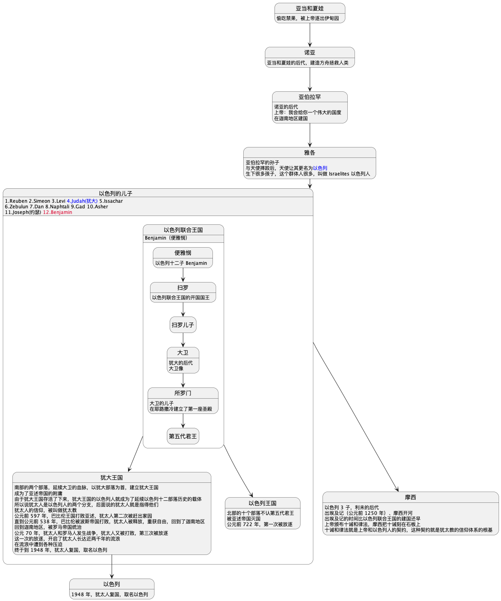

三大宗教简史
世界三大宗教：基督教、伊斯兰教、佛教
犹太人、犹太教简史

耶稣的故事
曾经，大卫王建立的犹大王国覆灭了，犹太人认为，在大卫王的后代中将会出现一个弥赛亚，弥赛亚是指被膏立为国王的人。他将统治犹太人，带领大家生活在理想国度。
但在被翻译成希腊文的时候，被翻译成了 Cristos，也就是我们说的救世主。那这个弥赛亚 - 救世主是谁呢？
（到目前 2023 年，在犹太人看来，这个人还没出现。）
上面这个故事与耶稣有什么关系呢？（呵呵，没有关系）
先来看公元元年，此时的迦南地区是在罗马人的统治下，先前的犹大王国变成了罗马的一个省叫 Judea。
在 Judea 有个犹太人叫玛丽，她生了个孩子叫耶稣。
耶稣出生就被传为犹太人王，所以被罗马人追杀，耶稣一家受到天使的提醒逃命，跑到了其他地方长大成人。
耶稣长大后，在他长大的地方加利利布道传道（传播教诲，不是传播宗教，耶稣没有立过教），追随者越来越多。
传教期间，他收了十二个门徒，后面带着他们前往耶路撒冷。他预言：「我必须前往耶路撒冷，去接受我的命运」。
耶稣到了耶路撒冷，受到大家的欢迎，威胁到了犹太长老的地位，于是密谋杀掉耶稣。
十二门徒中出了个叛徒犹大（Judas，和以色列四子 Judah 名字不一样，注意区分），为了三十银币，决定出卖耶稣的行踪。
耶稣被钉死在十字架上。
耶稣复活。
耶稣在加利利给门徒颁布重要使命，「你们把我的平生事迹，我的话告诉给全世界的人，教导他们我教给你们的事，我将陪伴你们直到永远」。
耶稣升天。
基督教
耶稣说自己是预言中的救世主，犹太人中有信他的和不信他的，不信的人就仍然是犹太教，他们流浪近两千年，然后复国以色列，时至今日依旧等待弥赛亚的出现。
信耶稣是弥赛亚的犹太人就是早期的犹太基督徒。
《塔纳赫》是什么？
在犹太人第二次被放逐，巴比伦之囚期间（公元前 597 年 - 公元前 538 年），犹太人用希伯来文记载、编写、整编出一份初稿，终稿在公元 100 年后，犹太教开会定了下来，名称为《塔纳赫》。
《塔纳赫》里记载的故事和律法被基督徒认为是上帝和子民旧的约定，叫《旧约》。
门徒们记载的耶稣的内容，是上帝和子民新的约定，叫《新约》。
两约组成《圣经》。
基督徒也看《旧约》，但主要是看《新约》，因为他们信仰的是耶稣。
信耶稣，得永生。
门徒在宣传信仰的过程中，门徒中迈出了非常重要的一步，开始向非犹太人传教。
后面这些信仰者有了新的名字，叫 Christian 基督徒。
- 犹太教只传犹太人，不传外邦人（21世纪了，非犹太人可以加入犹太教，只不过要考核，过程非常艰难），认为只有犹太人才是上帝的选民；
- 耶稣说救赎了全人类，所以只要是人都可以信基督教，这是一种普世的观念，所以教会叫做普世教会；
但当时环地中海地区还是罗马人的天下，而罗马人信众神之王宙斯，而且耶稣是被罗马人钉在了十字架上，所以基督徒一直遭到大环境的打压。
直到公元 300 年，当时的罗马皇帝叫 Constantine 君士坦丁，说自己在天空中看到了十字架，君士坦丁最终皈依了基督教，公元 313 年将基督教列为合法的宗教，他也是第一个基督徒皇帝。
公元 325 年，第一届大公会。
公元 331 年，初次定稿《新约》，定稿正宗版《圣经》（旧约+新约）。
公元 380 年，基督教被立为罗马国教。
公元 395 年，罗马帝国分成了西罗马和东罗马。渐渐地，基督教也两极分化
西罗马皇帝给自己称号去了一个新名字 Pope 也就是我们说的教皇。
东西教会的分歧越来越大，公元 1054 年，东西教大分裂。
- 西教叫 Roman Catholic Church 罗马普世教会；被引入中国后被翻译成 天主教 ；
- 东教叫 Othodox Catholic Church 正宗普世教会；现在更多称为 东正教 ；
公元 1517 年，马丁路德对天主教进行宗教改革，衍生出抗议教，抗议教不好听，传播时使用新衍生出来的教 - 新教。
分辨新教和天主教：在胸口比划十字的是天主教，新教不比划。
它们（东正教、天主教、新教）都是 Christianity 基督教，信徒都是 Christian 基督徒，都过 Christmas 圣诞节（圣子耶稣诞生的节日）。
穆罕默德、伊斯兰教
伊斯兰同样会讲亚伯拉罕的故事，《塔纳赫》中只认可《妥拉》这部分（讲摩西的部分），承认耶稣在迦南地区传教，但是不认可耶稣是上帝的儿子，耶稣和摩西一样是个先知，不信耶稣复活升天。而且他们认为其他两教（犹太教、基督教）《塔纳赫》剩余的部分和《新约》都是被篡改过的。
默罕默德居于麦加，在他 40 岁那年（公元 610 年），默罕默德在山洞里遇到了天使 Gabrinl，通过天使得到了上帝的启示，此后穆罕默德开始传播上帝的教诲。
追随者越来越多，建立了伊斯兰教。
三教同源，信奉同一个神，就是和亚伯拉罕立下契约的那个神。
伊斯兰记载穆罕默德受上帝启示的记录被写成了《古兰经》，这就是教徒穆斯林们的重要经文。